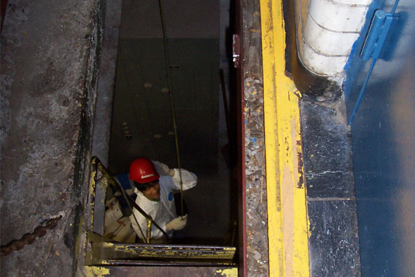
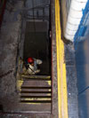
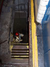

NYC Department of Transportation - Engineering Internship

Collaborating with Bridge Engineers
|  |  |
 |
 |
 |
 |
 |
 |
 |
 |
Polytechnic Institute of
New York University (2012)
Strong background in
Web Design and Data Analytics
|
HTML |
CSS |
Javascript |
jQuery |
|
Python |
WordPress |
AutoCAD |
Solidworks |
|
Adobe Dreamweaver CS6 |
Adobe Photoshop CS6 |
Adobe InDesign CS6 |
Type Speed (WPM) |
|
Microsoft Word 2010 |
Microsoft Excel 2010 |
Microsoft Project 2007 |
Microsoft Powerpoint 2010 |
|  | |
|
|
|
|
|
|
|
|